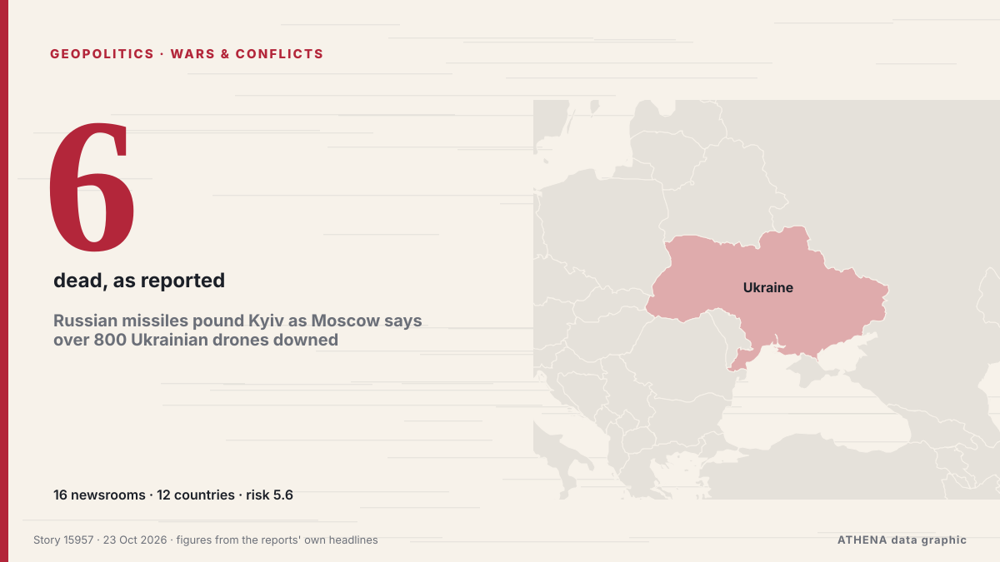

Russian missiles pound Kyiv as Moscow says over 800 Ukrainian drones downed

KYIV: Russia bombarded Kyiv with ballistic missiles in an hourslong nighttime barrage, while the Russian military said Thursday that its air defenses intercepted over 800 drones fired by Ukraine at… из Arab News
Независимые источники: 16 изданий в 12 странах, с 19 окт.; первым сообщил Kyiv Post; освещение идёт на спад. ATHENA оценивает риск как повышенный (5.6/10), прежде всего из-за тяжести описываемого ущерба и географического и отраслевого охвата. Уверенность — 92 % (высокая); подтверждают независимые источники: 16 изданий, средняя надёжность источников — 78 %. Кто сообщал: 11 СМИ в стране Украина · Ukraine, 2 СМИ в стране Азербайджан · Azerbaijan, 2 СМИ в стране Соединенные Штаты · United States. Освещение шло с 19 окт. по 23 окт., 82 ч.
Почему это важно: Полномасштабное вторжение России в Украину началось в феврале 2022 года. Мониторинг следит за боевыми действиями, ударами по инфраструктуре и дипломатией вокруг войны так, как их освещает мировая пресса.
Что изменилось: 18 новых сообщений от 15 редакций за 24 часа до 23 окт..
Заголовки приводятся на английском языке, как они были опубликованы.
Коротко в цифрах
Отобрано, оценено и написано по опубликованной методологии ATHENA. Ни один редактор не вмешивается в отдельные события. Как это создаётся ›
| 19 Oct 19:17 UTC | 1 |
|---|---|
| 19 Oct 22:17 UTC | 0 |
| 20 Oct 01:17 UTC | 0 |
| 20 Oct 04:17 UTC | 1 |
| 20 Oct 07:17 UTC | 0 |
| 20 Oct 10:17 UTC | 0 |
| 20 Oct 13:17 UTC | 0 |
| 20 Oct 16:17 UTC | 0 |
| 20 Oct 19:17 UTC | 0 |
| 20 Oct 22:17 UTC | 0 |
| 21 Oct 01:17 UTC | 0 |
| 21 Oct 04:17 UTC | 1 |
| 21 Oct 07:17 UTC | 0 |
| 21 Oct 10:17 UTC | 0 |
| 21 Oct 13:17 UTC | 0 |
| 21 Oct 16:17 UTC | 0 |
| 21 Oct 19:17 UTC | 0 |
| 21 Oct 22:17 UTC | 2 |
| 22 Oct 01:17 UTC | 1 |
| 22 Oct 04:17 UTC | 2 |
| 22 Oct 07:17 UTC | 4 |
| 22 Oct 10:17 UTC | 2 |
| 22 Oct 13:17 UTC | 5 |
| 22 Oct 16:17 UTC | 1 |
| 22 Oct 19:17 UTC | 3 |
| 22 Oct 22:17 UTC | 0 |
| 23 Oct 01:17 UTC | 0 |
| 23 Oct 04:17 UTC | 1 |
| 19 Oct 19:31 UTC | 0.0 |
|---|---|
| 22 Oct 07:12 UTC | 5.4 |
| 23 Oct 06:43 UTC | 5.6 |
| 23 Oct 06:43 UTC | 5.6 |
Откуда эти цифры
Значимость
Риск
Уверенность
Освещение — кто сообщил и когда
заголовок в оригинале · открывает источник- Kyiv Post · Украина · UkraineRussia Strikes Ecosoft, Planeta Plastic With Ballistic Missiles
- Kyiv Post · Украина · Ukraine1 Week Without US Intelligence: Russian Ballistics Kill At Least 6 Ukrainians, 21 Injured
- Kyiv Post · Украина · UkraineRussia Has Up to 700 Ballistic Missiles, 6,200 Attack Drones Ready to Strike Ukraine, Intelligence Says
- Kyiv Post · Украина · UkraineRussia Pounds Kyiv in Overnight Missile and Drone Barrage – 1 Dead, 24 Injured, Including 4 Children
- Ukrainska Pravda (English) · Украина · UkraineRussia attacks Kyiv with ballistic missiles, damaging medical facility and Pivdennyi Bridge
- Ukrainska Pravda (English) · Украина · UkraineOne person killed and 24 injured in Russian attack on Kyiv, including four children – photos
- AzerNews · Азербайджан · AzerbaijanHeavy ballistic missile strike hits Kyiv, injuring 15 and severing transport links
- Ukrinform (English) · Украина · UkraineRussian ballistic attack leaves one dead, 22 injured, causes damage in six Kyiv districts
- APA (English) · Азербайджан · AzerbaijanZelensky: Russia fires 21 ballistic missiles at Ukraine, killing 2 people
- ABC News (International) · Соединенные Штаты · United StatesRussia pounds Ukraine with missiles and drones, hours after agreeing to peace talks
- Kyiv Post · Украина · UkraineZelensky on Overnight Strike: ‘Russian ‘Humanists’ Launch 21 Ballistic Missiles at Kyiv in 3 Waves’
- TASS (English) · Россия · RussiaUkraine’s military admits it fails to intercept any single Russian ballistic missile again
- CBC News · Канада · CanadaRussia pounds Ukraine's capital Kyiv with missiles and drones, hours after agreeing to peace talks
- Ukrinform (English) · Украина · UkraineZelensky: Russia used three ballistic missiles with cluster warheads in attack on Kyiv
- ABC News Australia · Австралия · AustraliaZelenskyy says fresh Russian strikes show 'no change' in Kremlin position
- Arab News · Саудовская Аравия · Saudi ArabiaRussian missiles pound Kyiv as Moscow says over 800 Ukrainian drones downed
- Kyiv Post · Украина · UkraineRussia Hits Central Kyiv With Cluster Missile
- PBS NewsHour · Соединенные Штаты · United StatesRussian missiles pound Kyiv as Moscow says over 800 Ukrainian drones downed
- Oman Observer · Оман · OmanRussia pounds Kyiv as both sides eye new talks
- The Straits Times · Сингапур · SingaporeUkraine’s Zelensky says fresh Russian strikes show ‘no change’ in Kremlin position
- Ukrinform (English) · Украина · UkraineRussia to step up ballistic missile attacks as U.S. cuts Patriot missile supplies to Ukraine – Zelensky
- The Daily Star — page reader · Бангладеш · BangladeshRussia, Ukraine trade missile, drone strikes
- Taipei Times · Тайвань · TaiwanRussian missiles pound Kyiv a day after US talks
- Mainichi (English) · Япония · JapanRussian missiles pound Kyiv as Moscow says over 800 Ukrainian drones downed